Chapter 9. 정규화(Normalization)¶
1절. 개념¶
이상(Anomaly) 현상¶
- 불필요한 데이터 중복으로 릴레이션에 대한 데이터 삽입·수정·삭제 연산 수행 시 발생하는 부작용
| 종류 | 설명 |
|---|---|
| 삽입 이상 | 새 데이터를 삽입하고자 불필요한 데이터도 함께 삽입하는 문제 |
| 갱신 이상 | 중복 튜플 중 일부만 변경하여 데이터가 불일치하게 되는 모순 문제 |
| 삭제 이상 | 튜플 삭제 시 꼭 필요한 데이터까지 함께 삭제되는 데이터 손실 문제 |
삽입 이상(Insertion Anomaly) 예시¶
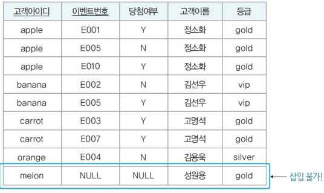
- 아직 이벤트에 참여하지 않은 고객아이디가 "melon", 이름이 "성원용", 등급이 "gold"인 신규 고객의 데이터는 이벤트참여 릴레이션에 삽입 불가
- 삽입할 경우 임시 이벤트번호로 삽입 필수
갱신 이상(Update Anomaly) 예시¶
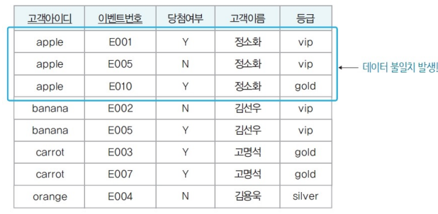
- 아이디가 "apple"인 고객의 등급이 "gold"에서 "vip"로 변경 : 일부 튜플 등급만 수정
- "apple" 고객이 서로 다른 등급을 가지는 모순 발생
삭제 이상(Deletion Anomaly) 예시¶
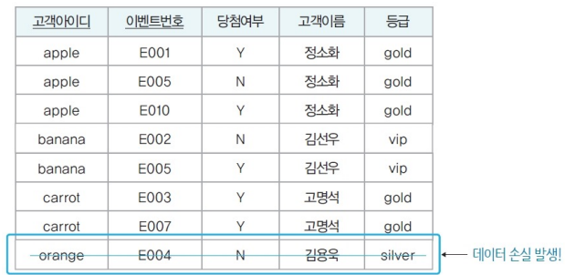
- 아이디가 "orange"인 고객이 이벤트참여를 취소해 관련 튜플 삭제 필요
- 이벤트참여와 관련 없는 고객아이디, 고객이름, 등급 데이터까지 손실
정규화(Normalization)¶
- 이상 현상 방지
- 릴레이션을 관련 속성들로만 구성
=> 릴레이션을 분해(decomposition)하는 과정 - 함수적 종속성 판단 후 정규화
함수적 종속성(FD : Functional Dependency)¶
- 속성들 간 관련성
2절. 함수 종속¶
함수 종속¶
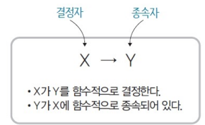
"X가 Y를 함수적으로 결정"
"Y가 X에 함수적으로 종속"
- 릴레이션의 모든 튜플에서 하나의 X 값에 대한 Y 값이 항상 하나
- X와 Y는 하나의 릴레이션을 구성하는 속성들의 부분 집합
- X → Y
- X : 결정자
- Y : 종속자
함수 종속 관계 판단 예시(1)¶
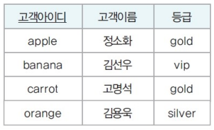
- 고객아이디에 대응되는 고객이름 속성과 등급 속성이 단 하나
| 결정자 | -> | 종속자 |
|---|---|---|
| 고객아이디 | -> | 고객이름 |
| 고객아이디 | -> | 등급 |
| 고객아이디 | -> | (고객이름, 등급) |
- 종속 다이어그램
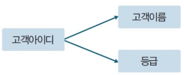
함수 종속 관계 판단 유의 사항¶
- 속성 자체의 특성과 의미 기반 함수 종속성 판단
- 속성값은 계속 변화
- 현재 릴레이션에 포함된 속성값으로만 판단 X
- 기본키와 후보키는 릴레이션의 다른 모든 속성들을 함수적으로 결정
- 기본키나 후보키가 아니라도 다른 속성을 유일하게 결정하는 속성은 함수 종속 관계에서 결정자
함수 종속 관계 판단 예시(1)¶
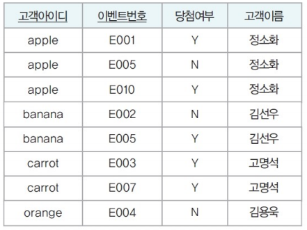
| 결정자 | -> | 종속자 |
|---|---|---|
| 고객아이디 | -> | 고객이름 |
| {고객아이디, 이벤트번호} | -> | 당첨여부 |
| {고객아이디, 이벤트번호} | -> | 고객이름 |
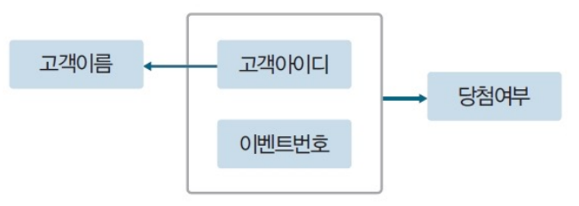
- 종속 다이어그램
함수 종속성 다이어그램(Functional Dependency Diagram)¶
- 함수 종속성을 나타내는 표기법
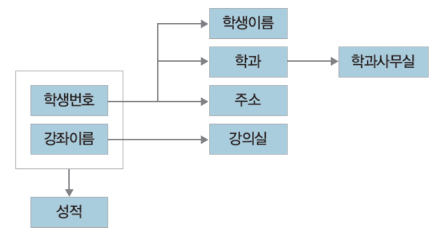
| 종류 | 표기법 |
|---|---|
| 릴레이션 속성 | 직사각형 |
| 속성 간 함수 종속성 | 화살표 |
| 복합 속성 | 직사각형 묶음 |
완전 함수 종속(FFD : Full Functional Dependency)¶
- 릴레이션에서 속성 집합 Y가 속성 집합 X에 함수적으로 종속됐지만 속성 집합 X의 전체가 아닌 일부분에는 종속 X
- 일반적인 함수 종속 == 완전 함수 종속
- ex) 당첨여부는 {고객아이디, 이벤트번호} 에 완전 함수 종속
부분 함수 종속(PFD; Partial Functional Dependency)¶
- 릴레이션에서 속성 집합 Y가 속성 집합 X의 전체가 아닌 일부분에 함수적 종속
- ex) 고객이름은 {고객아이디, 이벤트번호} 에 부분 함수 종속
고려할 필요 없는 함수 종속 관계¶
| 예시 |
|---|
| 고객아이디 -> 고객아이디 |
| {고객아이디, 이벤트번호} -> 이벤트번호 |
- 결정자 == 종속자
- 결정자가 종속자 포함
3절. 기본 정규형¶
정규화(Normalization) 개념¶
- 함수 종속성으로 릴레이션을 연관성이 있는 속성들로만 구성되도록 분해
- 이상 현상이 발생하지 않는 올바른 릴레이션으로 만드는 과정
정규화 기본 목표¶
- 관련 없는 함수 종속성은 별개의 릴레이션으로 표현
정규화 주의 사항¶
- 정규화로 릴레이션은 무손실 분해(Nonless Decomposition) 필요
- 릴레이션이 의미상 동등한 릴레이션들로 분해
- 분해로 인한 정보 손실 미발생
- 분해된 릴레이션들을 자연 조인 시 분해 전의 릴레이션으로 복원 가능
정규형(NF : Normal Form)¶
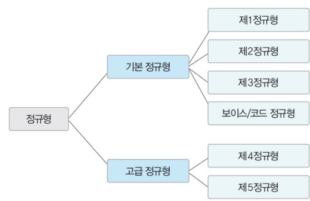 |
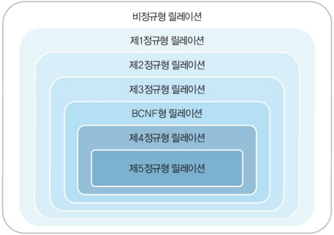 |
|---|---|
- 릴레이션 정규화 정도
- 각 정규형마다 제약조건이 존재
- 정규형 차수 증가 시 요구 제약조건이 많아지고 엄격
- 릴레이션의 특성을 고려한 적합한 정규형 선택
4절. 정규화 과정¶
제 1 정규형(1NF : First Normal Form)¶
- 릴레이션에 속한 모든 속성의 도메인이 원자 값(Atomic Value)으로만 구성된 경우
- 제 1 정규형을 만족해야 관계 데이터베이스의 릴레이션 가능
제 1 정규형 예시¶
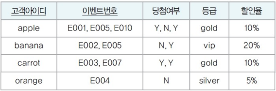 |
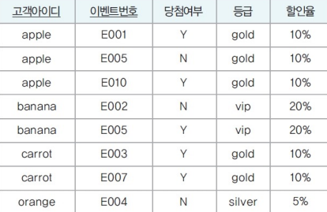 |
|---|---|
| 함수 종속 관계 | 함수 종속 다이어그램 |
|---|---|
| 고객아이디 -> 등급 고객아이디 -> 할인율 등급 -> 할인율 {고객아이디, 이벤트번호} -> 당첨여부 |
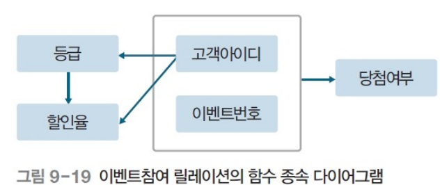 |
- 이상 현상 발생 형태
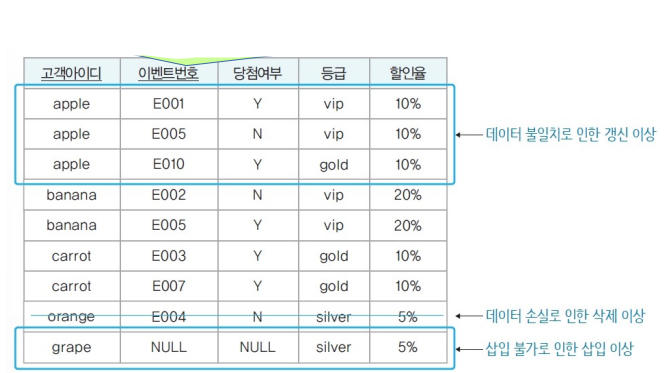
이상 현상 발생 이유¶
- 기본키인 {고객아이디, 이벤트번호}에 완전 함수 종속되지 못함
- 일부분인 고객아이디에 종속되는 등급과 할인율 속성이 존재
문제해결 방법¶
- 부분 함수 종속 제거를 위해 이벤트참여 릴레이션 분해
- 분해된 릴레이션들은 제 2 정규형에 속함
제 2 정규형(2NF : Second Normal Form)¶
- 릴레이션이 제 1 정규형에 속하고 기본키가 아닌 모든 속성이 기본키에 완전 함수 종속
제 1 정규형 릴레이션의 제 2 정규형 만족 조건¶
- 부분 함수 종속을 제거
- 모든 속성이 기본키에 완전 함수 종속되도록 분해
제 2 정규형 예시¶
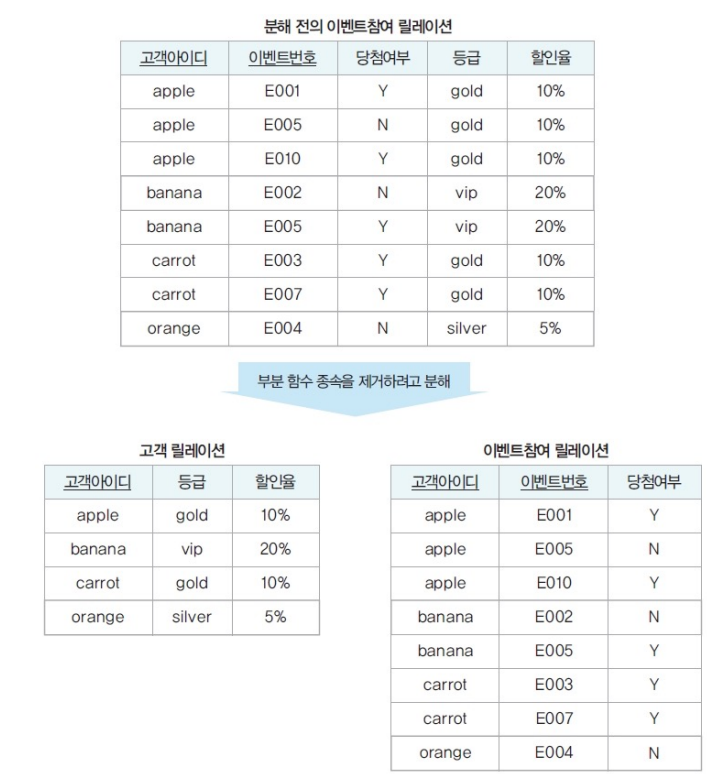
| 함수 종속 다이어그램 | 릴레이션 분해 결과 |
|---|---|
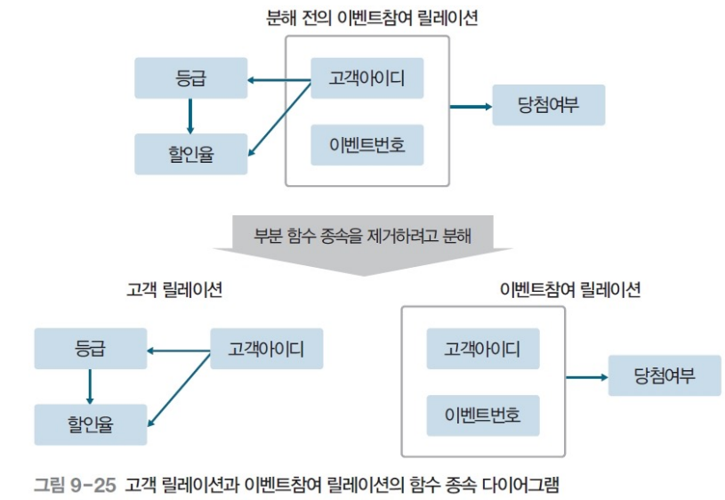 |
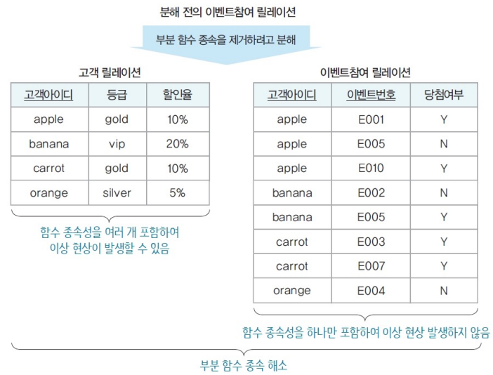 |
고객 릴레이션 이상 현상¶
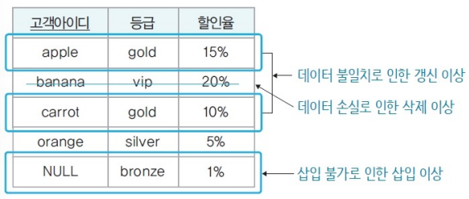
이상 현상 발생 이유¶
- 이행적 함수 종속의 존재
문제 해결 방법¶
- 이행적 함수 종속 제거를 위한 고객 릴레이션 분해
- 분해된 릴레이션들은 제 3 정규형에 속함
이행적 함수 종속(Transitive FD)¶
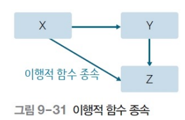
- 릴레이션을 구성하는 속성 집합 X, Y, Z에 대해 함수 종속 관계 X -> Y와 Y -> Z가 존재하면 논리적으로 X -> Z 성립
- Z가 X에 이행적으로 함수 종속
제 3 정규형(3NF : Third Normal Form)¶
- 릴레이션이 제 2 정규형에 속하고 기본키가 아닌 모든 속성이 기본키에 이행적 함수 종속이 아님
제 2 정규형 릴레이션의 제 3 정규형 만족 조건¶
- 모든 속성이 기본키에 이행적 함수 종속이 되지 않도록 분해
제 3 정규형 예시¶
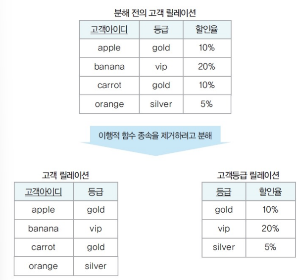
| 함수 종속 다이어그램 |
|---|
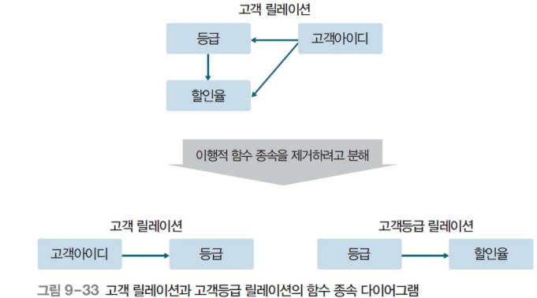 |
보이스/코드 정규형(BCNF : Boyce Codd Normal Form)¶
- 강한 제 3 정규형(Strong 3NF)
- 후보키를 여럿 가진 릴레이션에서 발생할 수 있는 이상 현상을 해결하기 위해 제 3 정규형보다 엄격한 제약조건 제시
- 보이스/코드 정규형에 속하는 모든 릴레이션은 제 3 정규형에 속함
- 제 3 정규형에 속하는 모든 릴레이션이 보이스/코드 정규형에 속하지 않음
- 릴레이션의 함수 종속 관계에서 모든 결정자가 후보키일 경우
보이스/코드 정규형 예시¶
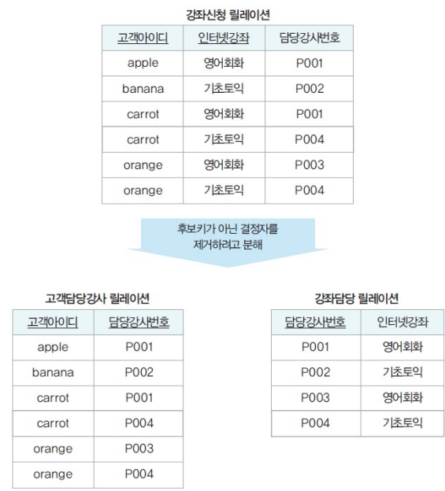
- 강좌신청 릴레이션 후보키
- {고객아이디, 인터넷강좌} : 기본키
- {고객아이디, 담당강사번호}
| 함수 종속 다이어그램 | 이상 현상 |
|---|---|
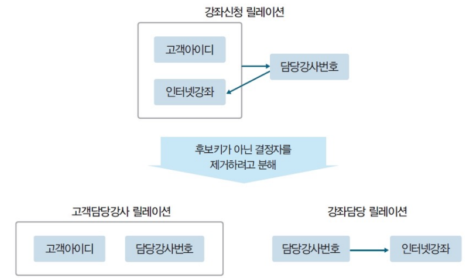 |
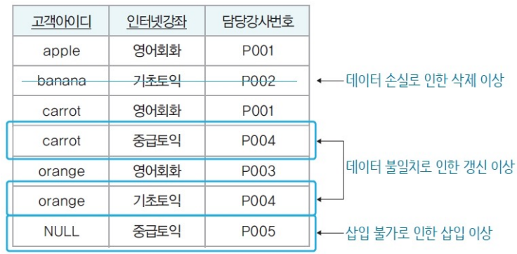 |
기본 정규화 과정¶
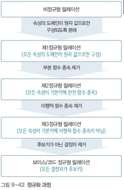
제 4 정규형¶
- 릴레이션이 보이스/코드 정규형을 만족하며 함수 종속이 아닌 다치 종속(MVD : Multi Valued Dependency) 제거
제 5 정규형¶
- 릴레이션이 제 4 정규형을 만족하며 후보키를 통하지 않는 조인 종속 (JD : Join Dependency) 제거
정규화 시 주의사항¶
- 모든 릴레이션이 제 5 정규형에 속해야 하는 것은 X
- 일반적으로 제 3 정규형 or 보이스/코드 정규형에 속하도록 릴레이션을 분해
- 데이터 중복 감소
- 이상 현상 해결